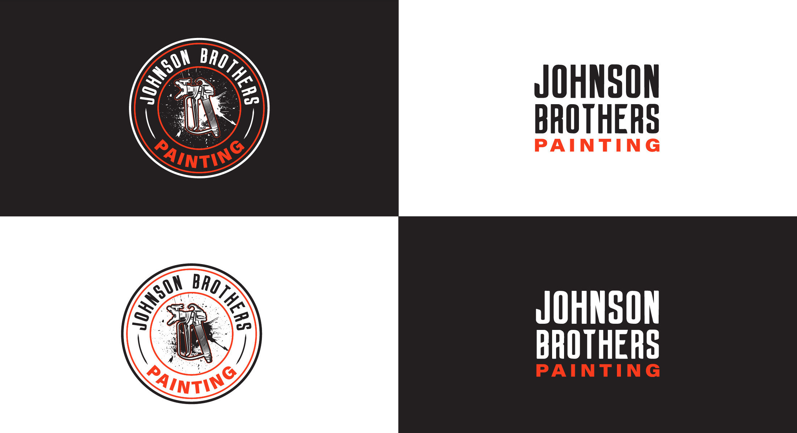
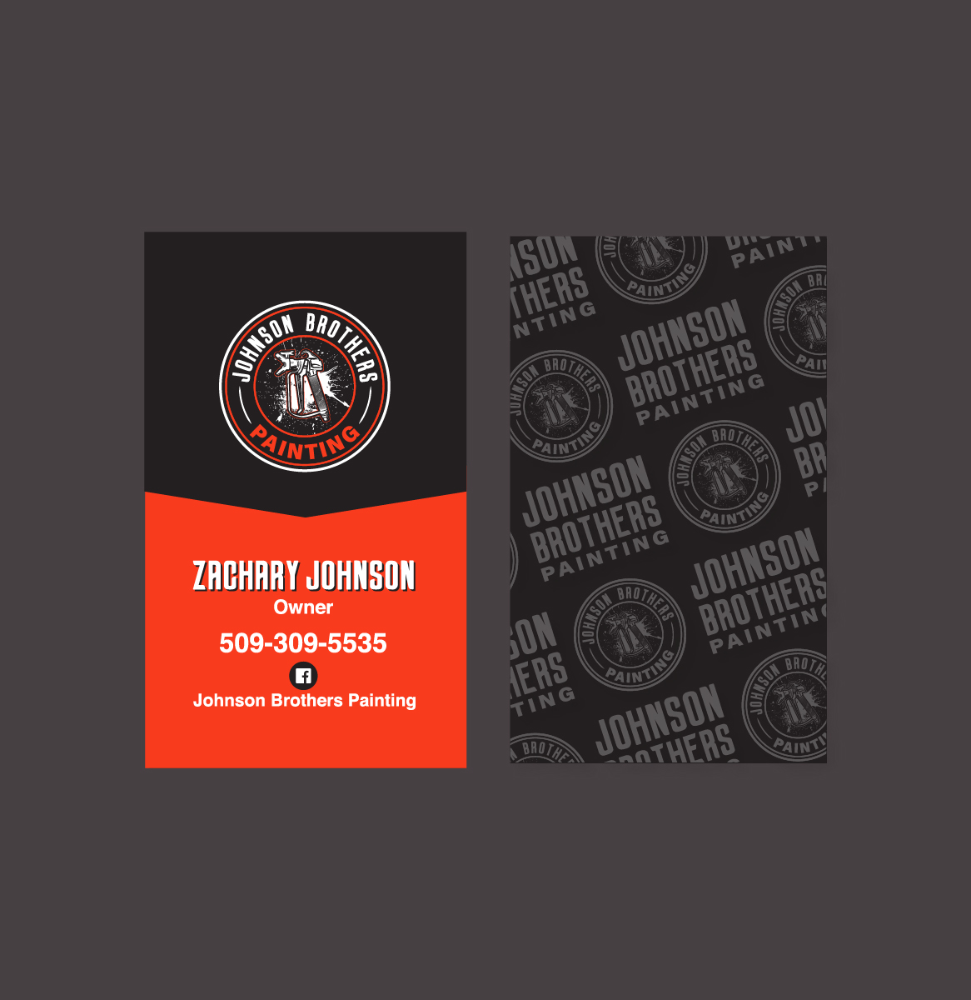

Spokane, Washington · Brand identity
Johnson Brothers Painting needed a brand that stands out from their competitors. Because the main logo is detailed, I also designed a simple secondary wordmark for the places where the badge needs a cleaner, simpler version.

